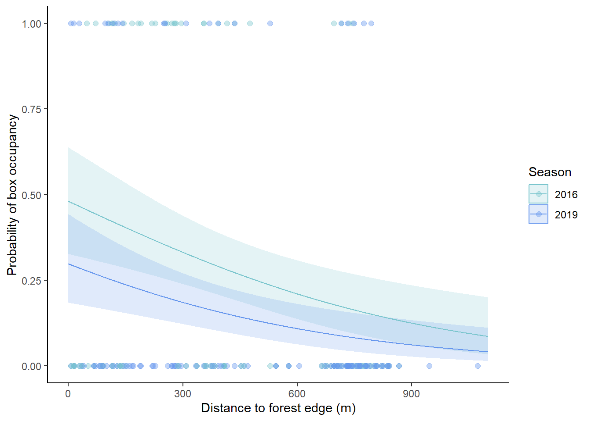

library(tidyverse) # general use
library(here) # file organization
library(MuMIn) # choosing best model
library(janitor) # cleaning data frames
library(DHARMa) # running model diagnostics
library(lubridate) # cleaning up dates
library(ggeffects) # model predictions
sst <- read.csv( # read in data
here("data", "SST_update2023.csv")) # set file path
nest_boxes <- read.csv( # read in data
here("data", "occdist.csv")) |> # set file path
clean_names() # clean column namesFinal
Eli Dewald
Problem 1. Research writing
a.
In part 1, they conducted a Pearson’s correlation coefficient test to study the correlation between the two variables. In part 2, they conducted an ANOVA test to study whether there were significant differences in means between more than two sources.
b.
A Tukey’s multiple comparisons of mean test could be used to find Tukey’s HSD, which would be useful for discerning which sources have significant differences between them in average nitrogen load (kg year-1). Running an Effect Size for an ANOVA test could be used to find η2, which would be useful to study how much source explains average nitrogen load (kg year-1).
c.
We found a [blank] (r = correlation coefficient) correlation between distance from headwater (km) and annual total nitrogen load (kg year-1) (Pearson’ R test, t(degrees of freedom) = t-statistic, p = 0.03, α = significance level).
We found a [blank] (η2 = effect size) difference between sources (urban land, atmospheric deposition, fertilizer, wastewater treatment, and grasslands) in nitrogen load (kg year-1) (one-way ANOVA, f(among groups degrees of freedom, within groups degrees of freedom) = f-statistic, p = 0.02, α = significance level). On average, [blank] sources tended to have [blank] nitrogen load than [blank, etc.] (Tukey HSD, 95% CI:[lower bound, upper bound] (kg year-1)) sources.
Problem 2. Data visualization
a.
sst_clean <- sst |> # create new object from sst
mutate(date = as_date(date),
year = year (date),
month = month(date)) |> # make sure date is a date
filter(date > as_date("2017-12-31")) |>
# filter to only includes dates from 2018 and after
select(year, month, temp) |> # select columns of interest
group_by(year, month) |> # group by month and year
summarize(mean_monthly_sst = mean(temp, na.rm = TRUE)) |>
# calculate monthly mean sst
mutate(year = as_factor(year), # make sure year is a factor
year = fct_relevel(year, # change year factor levels to YYYY format
"2018", "2019", "2020", "2021", "2022", "2023")) |>
mutate(month = case_when( # rename values
month == "1" ~ "Jan", # change "1" to "Jan"
month == "2" ~ "Feb", # change "2" to "Feb"
month == "3" ~ "Mar", # change "3" to "Mar"
month == "4" ~ "Apr", # change "4" to "Apr"
month == "5" ~ "May", # change "5" to "May"
month == "6" ~ "Jun", # change "6" to "Jun"
month == "7" ~ "Jul", # change "7" to "Jul"
month == "8" ~ "Aug", # change "8" to "Aug"
month == "9" ~ "Sep", # change "9" to "Sep"
month == "10" ~ "Oct", # change "10" to "Oct"
month == "11" ~ "Nov", # change "11" to "Nov"
month == "12" ~ "Dec"), # change "12" to "Dec"
month = ordered(month),
month = fct_relevel(month,
"Jan", "Feb", "Mar", "Apr", "May", "Jun",
"Jul", "Aug", "Sep", "Oct", "Nov", "Dec")) |>
ungroup() # ungroup data frame
slice_sample(sst_clean, # slice sst_clean data frame
n = 5) # display 5 rows# A tibble: 5 × 3
year month mean_monthly_sst
<fct> <ord> <dbl>
1 2019 Apr 13.7
2 2020 Nov 15.5
3 2018 Aug 19.6
4 2023 Jan 14.0
5 2020 Sep 18.7str(sst_clean) # display structure of sst_clean data frametibble [72 × 3] (S3: tbl_df/tbl/data.frame)
$ year : Factor w/ 6 levels "2018","2019",..: 1 1 1 1 1 1 1 1 1 1 ...
$ month : Ord.factor w/ 12 levels "Jan"<"Feb"<"Mar"<..: 1 2 3 4 5 6 7 8 9 10 ...
$ mean_monthly_sst: num [1:72] 15 14.3 13.5 12.8 13.6 ...b.
plot <- ggplot(data = sst_clean, # plot new object with sst_clean data frame
aes(x = month, # set x-axis
y = mean_monthly_sst, # set y-axis
group = year, # group as year
color = year)) + # color by year
geom_point() + # add points
geom_line(linewidth = 1) + # add lines
labs(x = "Month", # label x-axis
y = "Mean monthly sea surface temperature (°C)", # label y-axis
color = "Year") + # label legend
theme(panel.background = element_rect("white"), # make background white
panel.grid = element_blank(), # remove grid
legend.position = "inside", # set legend position to inside
legend.position.inside = c(0.09, 0.7), # control inside position of legend
panel.border = element_rect(color = "black", # add black outline to plot
fill = NA, # make sure there is no fill within border
linewidth = 1), # set outline size
legend.text = element_text(size = 10)) + # set size of legend
scale_color_manual(values = c("2018" = "#56B1F7", "2019" = "#428AC2", "2020" = "#3670A0", "2021" = "#2A5880", "2022" = "#1E4160", "2023" = "#132B43"))
# set color for each year
plot # display plotProblem 3. Data analysis
a.
The 1s and 0s denote whether the species named in the column title is or isn’t present in the nest box. 1 means that the species is present, and 0 means that specific species is not present.
b.
Swift Parrots differ from Common Starling and Tree Martin due to being at high risk of extinction. Consequently, nest boxes have been built to support Swift Parrots, but the other study species are competitors which can exploit the nest boxes.
c.
The seasons mentioned in the study are two different breeding seasons where Swift Parrots were actively breeding at the study. Nest boxes were deployed during the 2016 breeding season and had been left there for a few years by the 2019 breeding season.
d.
| Model number | Season | Distance to forest edge | Description |
|---|---|---|---|
| 0 | no predictors (null model) | ||
| 1 | X | X | both predictors (saturated model) |
| 2 | X | season only | |
| 3 | X | distance to forest edge only |
e.
nest_boxes_clean <- nest_boxes |> # make new data frame from nest_boxes data frame
mutate(season = as_factor(season), # make sure season is a factor
season = fct_relevel(season, "2016", "2019")) # change factor levels
model0 <- glm(sp ~ 1, # creating new object of linear model with no predictors
data = nest_boxes_clean, # set data frame
family = "binomial") # set distribution
model1 <- glm(sp ~ season + edge_distance,
# creating new object of linear model with both predictors
data = nest_boxes_clean, # set data frame
family = "binomial") # set distribution
model2 <- glm(sp ~ season, # creating new object of linear model with season as predictor
data = nest_boxes_clean, # set data frame
family = "binomial") # set distribution
model3 <- glm(sp ~ edge_distance,
# creating new object of linear model with distance to forest edge as predictor
data = nest_boxes_clean, # set data frame
family = "binomial") # set distributionf.
plot(simulateResiduals(model0)) # plot model0 diagnostics
plot(simulateResiduals(model1)) # plot model1 diagnostics
plot(simulateResiduals(model2)) # plot model2 diagnostics
plot(simulateResiduals(model3)) # plot model3 diagnostics
g.
AICc(model0, model1, model2, model3) |> # check for best model using AIC
arrange(AICc) # display arranged output df AICc
model1 3 226.3133
model3 2 229.6716
model2 2 236.3744
model0 1 238.8318The best model, as determined by Akaike’s Information Criterion (AIC), is the model where Swift Parrot nest box presence is predicted by season and distance to forest edge.
h
model1_pred <- ggpredict(model1, # generate predictions based off of model1
terms = c("edge_distance [0:1100 by = 1]", "season"))
# set variables, range, and interval for prediction
ggplot(nest_boxes_clean, # plot with nest_boxes_clean data frame
aes(x = edge_distance, # set x-axis
y = sp, # set y-axis
group = group, # group by season
color = group, # color by season
fill = group)) + # fill by season
geom_ribbon(data = model1_pred,
# plot confidence interval ribbons based off of model predictions
aes(x = x, # set x axis
y = predicted, # set y axis
ymin = conf.low, # set upper bound of confidence interval
ymax = conf.high, # set lower bound of confidence interval
color = NULL), # remove ribbon outline
alpha = 0.2) + # make ribbons transparent
geom_line(data = model1_pred, # plot line based off of model predictions
aes(x = x, # set x axis
y = predicted)) + # set y axis
geom_point(data = nest_boxes_clean, # plot underlying data
aes(x = edge_distance, # set x axis
y = sp, # set y axis
group = season, # group by season
color = season, # color by season
fill = season), # fill by season
size = 2, # set size
shape = 21, # set shape
alpha = 0.4) + # make points transparent
theme_classic() + # change theme to remove gridlines
scale_fill_manual(values = c("cadetblue3", "cornflowerblue")) + # set fill colors
scale_color_manual(values = c("cadetblue3", "cornflowerblue")) + # set outline colors
labs(x = "Distance to forest edge (m)", # set x axis label
y = "Probability of box occupancy", # set y axis label
color = "Season", # rename legend
fill = "Season") # rename legend
i.
Figure 3. Probability of nest box occupancy by Swift Parrots tends to decrease with distance to forest edge and tends to be higher in 2016 than and 2019. Data from ‘occdist.csv’ (Stojanovic et al., 2021). Transparent shaded points represent observations of Swift Parrots occupying a nest box (0: absent, 1: present) during the 2016 (n = 104) and 2019 (n = 123) breeding seasons. Lines represent predicted values and ribbons represent the 95% confidence interval around predicted values based off a generalized linear model where Swift Parrot nest box presence is predicted by season and distance to forest edge. Color represents breeding season (Light blue: 2016, Dark blue: 2019).
j.
ggpredict(model1, # generate predictions based off of model1
terms = c("season [2016, 2019]"),
condition = c(edge_distance = "0"))# Predicted probabilities of sp
season | Predicted | 95% CI
-------------------------------
2016 | 0.48 | 0.33, 0.64
2019 | 0.30 | 0.18, 0.44ggpredict(model1, # generate predictions based off of model1
terms = c("season [2016, 2019]"),
condition = c(edge_distance = "900"))# Predicted probabilities of sp
season | Predicted | 95% CI
-------------------------------
2016 | 0.12 | 0.06, 0.24
2019 | 0.06 | 0.03, 0.13k.
Distance to forest edge and breeding season influence the presence of Swift Parrots within nest boxes. Swift Parrots tend to occupy nest boxes more often when the distance to the forest edge is low and the breeding season is 2016 (Figure 3). At a distance of 0 meters to the forest edge, there is a higher likelihood of occupancy in both 2016 (p = 0.48 (95% CI [0.33, 0.64])) and 2019 (p = 0.30 (95% CI [0.18, 0.44])), than at a distance of 900 meters in 2016 (p = 0.12 (95% CI [0.06, 0.24])) and 2019 (p = 0.06 (95% CI [0.03, 0.13])). This may be due to Swift Parrot behavior and the use of nest boxes far from the forest by Tree Martins, a competitor species. During the 2016 breeding season, there is a higher likelihood of Swift Parrots being present within nest boxes at a 0 meter distance to forest edge (p = 0.48 (95% CI [0.33, 0.64])) than in 2019 (p = 0.30 (95% CI [0.18, 0.44])), as well as a higher probability at a 900 meter distance to forest edge that same year (p = 0.12 (95% CI [0.06, 0.24])) than 2019 (p = 0.06 (95% CI [0.03, 0.13])). This trend may be due to the possibility of competitor species benefiting from established nest boxes more than Swift Parrots.
4. Affective and exploratory visualizations
a.
My affective and exploratory visualizations represent data in both different and similar ways. For the continuous variable exploratory visualization, I used linear regression, which was much different than my affective visualization. For the categorical variable visualization, I displayed mean values with standard error. For my affective visualization, I used mean values again, but didn’t include standard error. The only similarities among all my visualization is that they display sleep duration as the response variable and that the average for both normal and work days generally hovers around 8 hours in each of them. In my exploratory visualizations, it appears that I sleep more on work days, then it appears that I sleep more on normal days based off of my first draft of my affective visualization, and then finally it appears that there is no difference in sleep duration between types of day in my final affective visualization. The differences were not particularly large in the earlier figures, as mean sleep duration was generally around 8 hours for both types of day throughout the quarter. The differences in trends between visualizations are likely due to outliers and simply gathering more data as time went on lead to more similar values. I received some feedback about how the objects on each bed that differentiate which type of day they represent are a great touch. I kept that in mind for my final draft and added some more objects to help with the ease of interpretation. I was also told potentially flip the axis of my visualization. I followed that advice to try and make it more visually pleasing. I also asked my peers whether to keep the axis ticks and labels for my final draft and was told that they were pretty helpful for interpretation. I did end up deciding to remove them, as I felt they were out of place in an affective visualization. Overall, I received some helpful feedback that I incorporated into my thinking and working processes of creating my final affective visualization.